Workshops and activities for kids in Turin and around
Workshops, courses and activities for kids and families in Turin, Cuneo and around: ceramics, cooking, storytelling, music and more.
Search all workshops101 activities coming up · updated on 23 November 2026
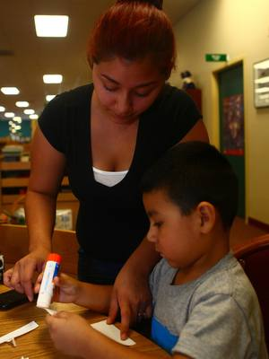
sat21novFor familiesDecorate your Christmas: a festive mugfrom Saturday 21 November to Sunday 20 December, 10:00–17:00Govone (CN) · 8 €with Il Magico Paese di Natale- from16novFor familiesLalababy: music for little onesfrom Monday 16 November to Monday 14 December, every Monday, 16:45–18:30Mondovì (CN) · 45 € for 4 sessionswith Cooperativa Il Melograno
 tue24novFor familiesWinnie-the-Pooh: stories and gamesTuesday 24 November, 17:00–18:00Cuneo (CN) · Freewith Biblioteca 0-18 di Cuneo with Noau Officina Culturale
tue24novFor familiesWinnie-the-Pooh: stories and gamesTuesday 24 November, 17:00–18:00Cuneo (CN) · Freewith Biblioteca 0-18 di Cuneo with Noau Officina Culturale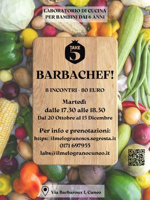
from20octFor familiesBarbachef: cooking for kidsfrom Tuesday 20 October to Tuesday 15 December, every Tuesday, 17:30–18:30Cuneo (CN) · 80 € for 8 sessionswith Cooperativa Il Melograno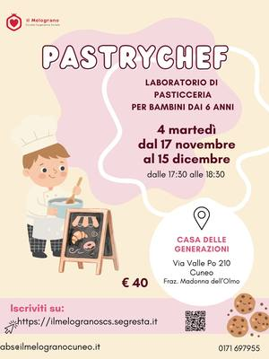
from17novFor familiesPastrychef: baking for kidsfrom Tuesday 17 November to Tuesday 15 December, every Tuesday, 17:30–18:30Cuneo (CN) · 40 € for 4 sessionswith Cooperativa Il Melograno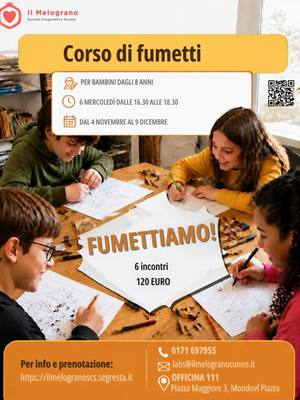
from4novFor familiesLet’s make comics: a course for kidsfrom Wednesday 4 November to Wednesday 9 December, every Wednesday, 16:30–18:30Mondovì (CN) · 120 € for 6 sessionswith Cooperativa Il Melograno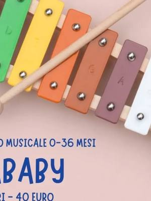
from11novFor familiesLalababy: music for little onesfrom Wednesday 11 November to Wednesday 2 December, every Wednesday, 16:45–18:30Cuneo (CN) · 40 € for 4 sessionswith Cooperativa Il Melograno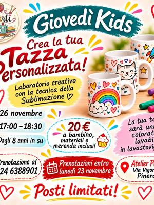
thu26novFor familiesGiovedì Kids: a personalised mugThursday 26 November, 17:00–18:30Pinerolo (TO) · 20 €with Le Arti di Marti- from12novFor familiesBarbachef: cooking for kidsfrom Thursday 12 November to Thursday 3 December, every Thursday, 17:30–18:30Mondovì (CN)with Cooperativa Il Melograno
- from13novFor familiesLalababy: music for little onesfrom Friday 13 November to Friday 4 December, every Friday, 16:45–17:30Cuneo (CN)with Cooperativa Il Melograno
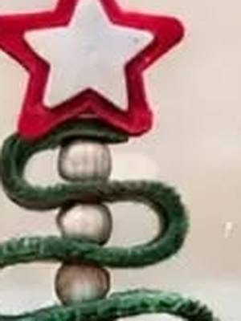
fri27novFor familiesChristmas workshop: felt treeFriday 27 November, 17:15–18:30Pozzo Strada (TO) · 15 €with Spazio Saper Fare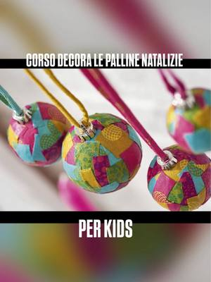
sat28novFor familiesChildren’s workshop: Christmas baublesSaturday 28 NovemberBarriera di Milano (TO) · 15 €with Magazzini Tessili from14novFor familiesLumi’s journey: emotions for childrenfrom Saturday 14 November to Saturday 12 December, every Saturday, 10:00–11:30Pinerolo (TO) · 100 €with Le Arti di Marti with Emanuela Busso
from14novFor familiesLumi’s journey: emotions for childrenfrom Saturday 14 November to Saturday 12 December, every Saturday, 10:00–11:30Pinerolo (TO) · 100 €with Le Arti di Marti with Emanuela Busso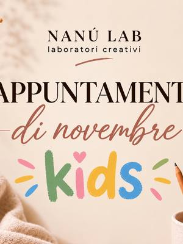
sat28novFor familiesNanù Lab Kids: the elf doorSaturday 28 November, 10:00–11:30Pinerolo (TO) · 20 €with Nanù Lab Kids with 123 Stella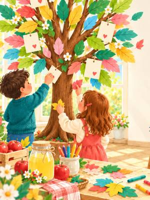
sat28novFor familiesThanksevening: the gratitude treeSaturday 28 November, 10:30Lingotto (TO)with Kids&Us at The Place Torino- sat28novFor familiesChristmas star: a workshop for kidsSaturday 28 November, 11:00–13:00Barriera di Milano (TO)with My Caro Lab at The Flairy Market
 sat28novFor familiesWish letter: a workshop for kidsSaturday 28 November, 15:00–17:00Barriera di Milano (TO)with My Caro Lab at The Flairy Market
sat28novFor familiesWish letter: a workshop for kidsSaturday 28 November, 15:00–17:00Barriera di Milano (TO)with My Caro Lab at The Flairy Market from14novPaintingCreative workshop: painting, drawing and recyclingfrom Saturday 14 November to Saturday 19 December, every Saturday, 15:00–17:00Alba (CN) · Freewith Marta e Maria ODV
from14novPaintingCreative workshop: painting, drawing and recyclingfrom Saturday 14 November to Saturday 19 December, every Saturday, 15:00–17:00Alba (CN) · Freewith Marta e Maria ODV- sat28novFor familiesDesigner candles: a painted Christmas candleSaturday 28 November, 16:00–17:30Santa Rita (TO) · 15 €with Bunbury
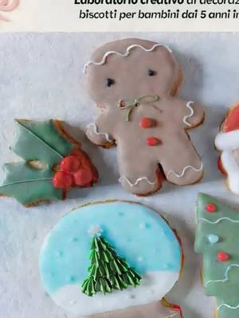
sat28novFor familiesChristmas sweet magic: decorated biscuitsSaturday 28 November, 16:00–17:30Pozzo Strada (TO) · 15 €with Zuccherini Cookies at Spazio Saper Fare- sat28novFor familiesMary Poppins’s bag: what would you pack?Saturday 28 November, 16:30–18:30Volpiano (TO) · Freewith Le Raccontastorie at Associazione Culturale TOTO
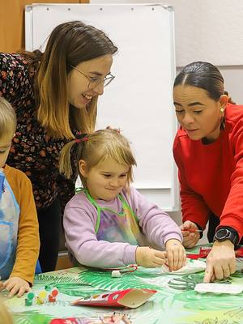
sun29novFor familiesChristmas Bubbles: cooking for kidsSunday 29 November, 11:00–12:30Barriera di Milano (TO)with La Cuoca Insolita at The Flairy Market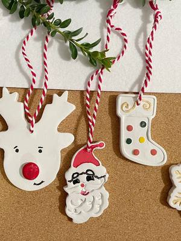
sun29novFor familiesCeramics for kids: Christmas decorationsSunday 29 November, 14:00–18:30Villar Perosa (TO) · 35 €with Simona di Terraferma Ceramiche at Riflessi di Casa- sun29novFor familiesDrawing my Peter: the charactersSunday 29 November, 15:00Pinerolo (TO)with La Terra Galleggiante
 sun8novFor familiesPaper, folds and wonder: pop-up booksfrom Sunday 8 November to Sunday 29 November, 16:30Quadrilatero (TO) · 5 €with MUSLI
sun8novFor familiesPaper, folds and wonder: pop-up booksfrom Sunday 8 November to Sunday 29 November, 16:30Quadrilatero (TO) · 5 €with MUSLI tue1decGamesGaming: board games at the libraryTuesday 1 December, 16:00–17:30Centro (TO) · Freewith Biblioteca della Regione Piemonte
tue1decGamesGaming: board games at the libraryTuesday 1 December, 16:00–17:30Centro (TO) · Freewith Biblioteca della Regione Piemonte wed2decOtherDecoden workshop: Christmas phone caseWednesday 2 December, 17:15–18:30Pozzo Strada (TO) · from 15 €with Lumos Magic Decoden at Spazio Saper Fare
wed2decOtherDecoden workshop: Christmas phone caseWednesday 2 December, 17:15–18:30Pozzo Strada (TO) · from 15 €with Lumos Magic Decoden at Spazio Saper Fare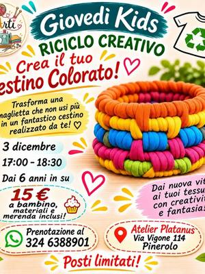
thu3decFor familiesGiovedì Kids: a basket from a T-shirtThursday 3 December, 17:00–18:30Pinerolo (TO) · 15 €with Le Arti di Marti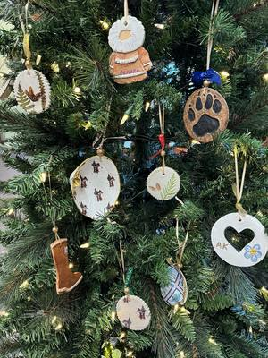
fri4decFor familiesChristmas Lab: Christmas craftsFriday 4 December, 17:00–19:00Candiolo (TO)with I Gonfi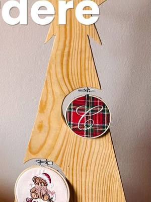
sat5decFor familiesChristmas workshop: three crafts for kidsfrom Saturday 5 December to Thursday 10 DecemberSan Salvario (TO) · 15 €with Eppi Lab sat5decJewelleryCreative Christmas: origami earringsfrom Saturday 5 December to Sunday 6 DecemberTurinwith Petites Révolutions
sat5decJewelleryCreative Christmas: origami earringsfrom Saturday 5 December to Sunday 6 DecemberTurinwith Petites Révolutions- sat5decFor familiesLittle Christmas decorations: painted woodSaturday 5 December, 10:00–12:00Turin · 10 €with Bunbury
- sat5decFor familiesBreakfast stories: kamishibai and coloursSaturday 5 December, 10:00–11:00Rivoli (TO) · 20 €with Officine Castagnero
 sat5decCookingChristmas Cookies Lab: decorated biscuitsSaturday 5 December, 14:30–17:30Pianfei (CN) · 25 €with Alter Ego
sat5decCookingChristmas Cookies Lab: decorated biscuitsSaturday 5 December, 14:30–17:30Pianfei (CN) · 25 €with Alter Ego sat5decFor familiesPenne Selvagge: a Christmas storySaturday 5 December, 16:00–17:30Centro (TO) · 10 €with Merende Selvagge at Circolo dei Lettori
sat5decFor familiesPenne Selvagge: a Christmas storySaturday 5 December, 16:00–17:30Centro (TO) · 10 €with Merende Selvagge at Circolo dei Lettori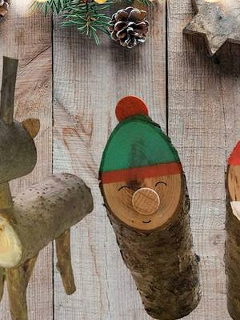
sun6decFor familiesDecorating with nature: Christmas ornamentsSunday 6 December, 14:30–16:30Revello (CN) · Freewith Parco del Monviso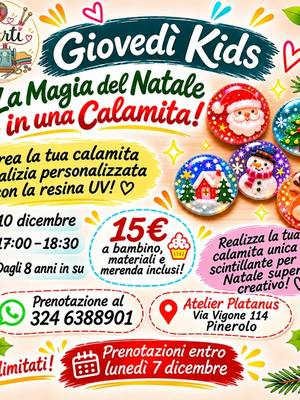
thu10decFor familiesGiovedì Kids: a resin Christmas magnetThursday 10 December, 17:00–18:30Pinerolo (TO) · 15 €with Le Arti di Marti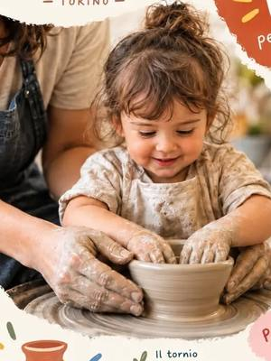
sat12decFor familiesPottery wheel workshop: clay with mum and dadSaturday 12 DecemberSanta Rita (TO) · 25 € per child and parentwith Bunbury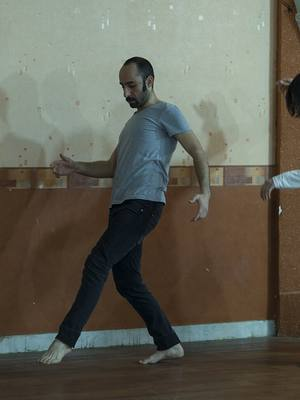
sat12decFor familiesRewrite it: theatre against stereotypesfrom Saturday 12 December to Sunday 13 December, 09:00–13:00Volpiano (TO) · Freewith Crab Teatro at Associazione Culturale TOTO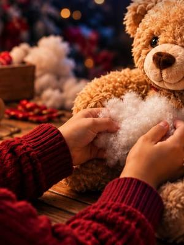
sat12decFor familiesThe hug factory: a teddy bearSaturday 12 December, 09:30Borgaro Torinese (TO) · 45 €with Bucaneve at Nikin House- sat12decPlantsWinter scents: natural Christmas decorationsSaturday 12 December, 15:00–17:00Melle (CN) · 15 €with Valverbe
 sun13decFor familiesFamily cooking: biscuits for RudolphSunday 13 December, 09:30–11:30Lingotto (TO) · 55 € · sold outwith Eataly Torino Lingotto
sun13decFor familiesFamily cooking: biscuits for RudolphSunday 13 December, 09:30–11:30Lingotto (TO) · 55 € · sold outwith Eataly Torino Lingotto sun13decFor familiesTeens in the kitchen: full menuSunday 13 December, 09:30–12:00Lingotto (TO) · 55 €with Eataly Torino Lingotto
sun13decFor familiesTeens in the kitchen: full menuSunday 13 December, 09:30–12:00Lingotto (TO) · 55 €with Eataly Torino Lingotto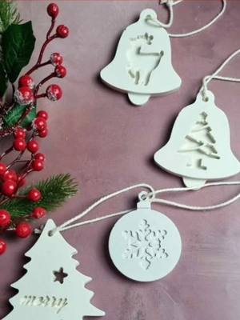
sun13decFor familiesElves’ Workshop: Christmas decorationsSunday 13 December, 09:30–10:45Brandizzo (TO) · 20 €with Oltre i Desideri at Arduino Lab- sun13decFor familiesFamily cooking: biscuits for RudolphSunday 13 December, 13:30–15:30Lingotto (TO) · 55 € · sold outwith Eataly Torino Lingotto
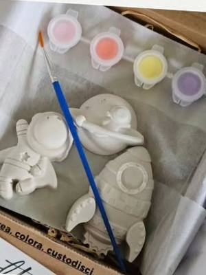
sun13decFor familiesChristmas workshop: jesmonite magnetsSunday 13 December, 16:00Bosconero (TO) · 15 €with Oltre i Desideri at Pro Loco Bosconero wed16decFor familiesCooking together: biscuits for RudolphWednesday 16 December, 16:00–18:00Lingotto (TO) · 55 €with Eataly Torino Lingotto
wed16decFor familiesCooking together: biscuits for RudolphWednesday 16 December, 16:00–18:00Lingotto (TO) · 55 €with Eataly Torino Lingotto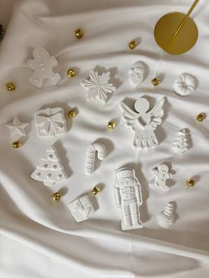
fri18decFor familiesChristmas workshop: plaster decorationsFriday 18 December, 17:00–19:00Candiolo (TO)with Nillybeth Lab at I Gonfi- sat19decFor familiesPinocchio and Giannettino: two rascalsSaturday 19 December, 16:00–17:30Centro (TO) · 10 €with Claudia Bellin (Camillo quante storie) at Circolo dei Lettori
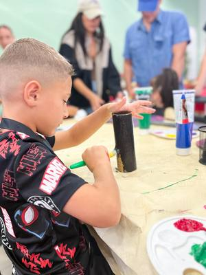
from8janFor familiesDrawing course: comic charactersfrom Friday 8 January, every Friday, 17:30–18:30Borgaro Torinese (TO) · 150 € for 10 lessonswith Nikin House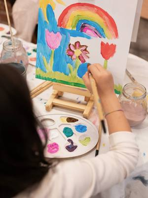
from19janFor familiesCreative kids: an art course for childrenfrom Tuesday 19 January, every Tuesday, 16:30–18:00Cuneo (CN) · 150 € for 6 lessonswith Atelier Crea-Arti- sun31janFor familiesCooking together: Carnival specialSunday 31 January, 09:30–11:30Lingotto (TO) · 55 €with Eataly Torino Lingotto
 sun31janFor familiesCooking together: Carnival specialSunday 31 January, 13:30–15:30Lingotto (TO) · 55 €with Eataly Torino Lingotto
sun31janFor familiesCooking together: Carnival specialSunday 31 January, 13:30–15:30Lingotto (TO) · 55 €with Eataly Torino Lingotto from2febFor familiesPrintmaking course: for teenagersfrom Tuesday 2 February to Tuesday 2 March, every Tuesday, 17:00–18:30Cuneo (CN) · 100 €with Michele Bruna at Sclab
from2febFor familiesPrintmaking course: for teenagersfrom Tuesday 2 February to Tuesday 2 March, every Tuesday, 17:00–18:30Cuneo (CN) · 100 €with Michele Bruna at Sclab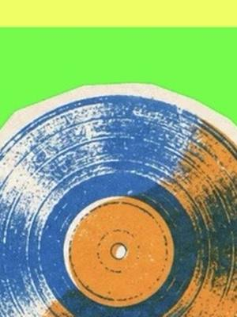
from11febFor familiesSound illustration course: music into picturesfrom Thursday 11 February to Thursday 11 March, every Thursday, 17:00–18:30Cuneo (CN) · 100 €with Francesca Veglio at Sclab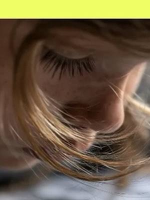
from13febFor familiesDrawing course: for childrenfrom Saturday 13 February to Saturday 13 March, every Saturday, 10:00–11:30Cuneo (CN) · 100 €with Francesca Reinaudo at Sclab sat27febFor familiesKids in the kitchen: DIY dinnerSaturday 27 February, 18:00–20:30Lingotto (TO) · 45 €with Eataly Torino Lingotto
sat27febFor familiesKids in the kitchen: DIY dinnerSaturday 27 February, 18:00–20:30Lingotto (TO) · 45 €with Eataly Torino Lingotto sun28febFor familiesKids in the Kitchen: cooking in EnglishSunday 28 February, 09:30–11:30Lingotto (TO) · 40 €with Eataly Torino Lingotto with Alessia Rossino
sun28febFor familiesKids in the Kitchen: cooking in EnglishSunday 28 February, 09:30–11:30Lingotto (TO) · 40 €with Eataly Torino Lingotto with Alessia Rossino sat20marFor familiesCooking with Dad: Father’s Day recipesSaturday 20 March, 09:30–11:30Lingotto (TO) · 45 €with Eataly Torino Lingotto
sat20marFor familiesCooking with Dad: Father’s Day recipesSaturday 20 March, 09:30–11:30Lingotto (TO) · 45 €with Eataly Torino Lingotto- from20marFor families2D animation course: for kidsfrom Saturday 20 March to Saturday 24 April, every Saturday, 10:00–11:30Cuneo (CN) · 100 €with Cosimo Sciaccaluga at Sclab
 sat20marFor familiesCooking with Dad: Father’s Day recipesSaturday 20 March, 13:30–15:30Lingotto (TO) · 45 €with Eataly Torino Lingotto
sat20marFor familiesCooking with Dad: Father’s Day recipesSaturday 20 March, 13:30–15:30Lingotto (TO) · 45 €with Eataly Torino Lingotto sun21marFor familiesCooking together: Easter specialSunday 21 March, 09:30–11:30Lingotto (TO) · 55 €with Eataly Torino Lingotto
sun21marFor familiesCooking together: Easter specialSunday 21 March, 09:30–11:30Lingotto (TO) · 55 €with Eataly Torino Lingotto from31marFor familiesArt course: great artists for childrenfrom Wednesday 31 March to Wednesday 28 April, every Wednesday, 16:30–18:00Cuneo (CN) · 100 €with Francesca Veglio at Sclab
from31marFor familiesArt course: great artists for childrenfrom Wednesday 31 March to Wednesday 28 April, every Wednesday, 16:30–18:00Cuneo (CN) · 100 €with Francesca Veglio at Sclab sat10aprFor familiesKids in the kitchen: DIY dinnerSaturday 10 April, 17:00–19:30Lingotto (TO) · 45 €with Eataly Torino Lingotto
sat10aprFor familiesKids in the kitchen: DIY dinnerSaturday 10 April, 17:00–19:30Lingotto (TO) · 45 €with Eataly Torino Lingotto sun11aprFor familiesKids in the Kitchen: cooking in EnglishSunday 11 April, 08:30–10:30Lingotto (TO) · 40 €with Eataly Torino Lingotto
sun11aprFor familiesKids in the Kitchen: cooking in EnglishSunday 11 April, 08:30–10:30Lingotto (TO) · 40 €with Eataly Torino Lingotto sun9mayFor familiesCooking with Mum: Mother’s Day recipesSunday 9 May, 08:30–10:30Lingotto (TO) · 45 €with Eataly Torino Lingotto
sun9mayFor familiesCooking with Mum: Mother’s Day recipesSunday 9 May, 08:30–10:30Lingotto (TO) · 45 €with Eataly Torino Lingotto sun9mayFor familiesCooking with Mum: Mother’s Day recipesSunday 9 May, 12:30–14:30Lingotto (TO) · 45 €with Eataly Torino Lingotto
sun9mayFor familiesCooking with Mum: Mother’s Day recipesSunday 9 May, 12:30–14:30Lingotto (TO) · 45 €with Eataly Torino Lingotto dateTBDOtherCascina Roccafranca: this season’s coursesDate TBDMirafiori (TO)with Cascina Roccafranca
dateTBDOtherCascina Roccafranca: this season’s coursesDate TBDMirafiori (TO)with Cascina Roccafranca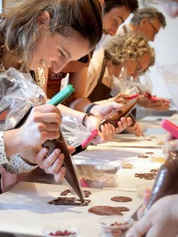
dateof your choiceCookingChoco-Story: chocolate workshopDate of your choiceSan Salvario (TO) · from 39 €with Choco-Story Torino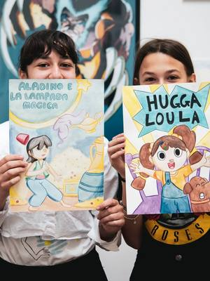
dateof your choiceFor familiesCreative gym: art for kidsDate of your choiceTurin · 25 € per lessonwith Kreative Club dateTBDPaintingNovel Academy: drawing and painting coursesDate TBDTurinwith Novel Academy
dateTBDPaintingNovel Academy: drawing and painting coursesDate TBDTurinwith Novel Academy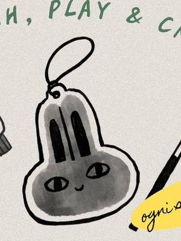
dateTBDFor familiesEnglish, Play & Create: workshops in EnglishDate TBDTurinwith Petites Révolutions dateTBDDance and movementProgetto SLIP: circus and aerial coursesDate TBDBarriera di Milano (TO) · from 190 € per yearwith Progetto SLIP
dateTBDDance and movementProgetto SLIP: circus and aerial coursesDate TBDBarriera di Milano (TO) · from 190 € per yearwith Progetto SLIP- dateof your choiceMusic and theatreDrum course: children and advancedDate of your choiceCentro (TO)with Gianpaolo Petrini at Polo Le Rosine
- dateTBDFor familiesCake design for children: decorated cupcakesDate TBDCentro (TO)with Maria Cocciolo at Polo Le Rosine
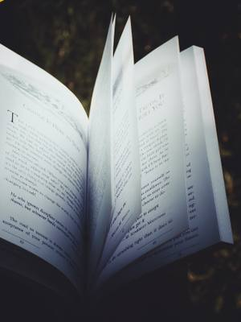
dateTBDFor familiesL’omino della pioggia: theatre for childrenDate TBDCentro (TO)with Giulia Cearini at Polo Le Rosine- dateTBDFor familiesPainting course for children: colour and imaginationDate TBDCentro (TO)with Mery Rigo at Polo Le Rosine
- dateTBDMusic and theatreActing course: adults, teens and childrenDate TBDCentro (TO)with Polo Le Rosine
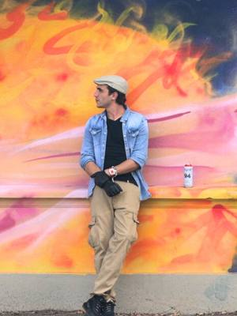
dateTBDFor familiesSogno Urbano: street art course for teensDate TBDCentro (TO)with Manuel Cantarello at Polo Le Rosine dateTBDPaintingDrawing and painting courses: trial lessonDate TBDCollegno (TO)with Soqquadro
dateTBDPaintingDrawing and painting courses: trial lessonDate TBDCollegno (TO)with Soqquadro dateTBDMusic and theatreSPLIT Teatro: acting, musicals and singingDate TBDMirafiori (TO)with SPLIT Teatro
dateTBDMusic and theatreSPLIT Teatro: acting, musicals and singingDate TBDMirafiori (TO)with SPLIT Teatro- dateTBDDance and movementStudio21: street dance classesDate TBDLingotto (TO)with Studio21 Street Dance School
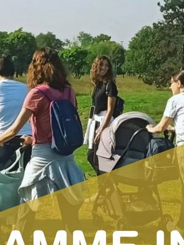
everytueDance and movementMums on the move: walks with babiesEvery Tuesday, 10:00–12:00Mirafiori (TO) · Freewith Casa nel Parco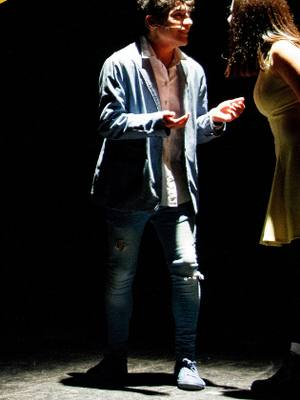
dateTBDFor familiesBuilding a character: theatre for teensDate TBD, 10:00–17:00Centro (TO)with Giulia Cearini at Polo Le Rosine- everywedFor familiesArt workshop for teens: painting and sculptureEvery Wednesday, 14:45–15:45Santa Rita (TO) · 45 € per monthwith Bunbury
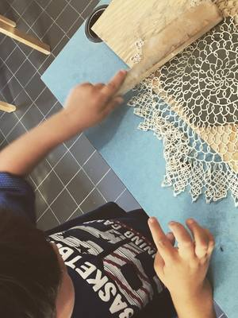
dateof your choiceFor familiesKids’ workshop: clay and sculptureEvery Monday, Wednesday and Friday, 15:00San Salvario (TO) · from 25 € per lessonwith Pottery Lab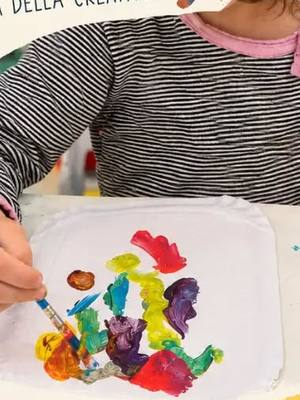
everywedFor familiesArt workshop for little ones: colours and clayEvery Wednesday, 16:30–17:30Santa Rita (TO) · 30 € per monthwith Bunbury everymonFor familiesOne step at a time: cartoons for kidsEvery Monday, 16:30–18:30Aurora (TO) · 30 € per monthwith Luna Clara Ronco at Cecchi Point
everymonFor familiesOne step at a time: cartoons for kidsEvery Monday, 16:30–18:30Aurora (TO) · 30 € per monthwith Luna Clara Ronco at Cecchi Point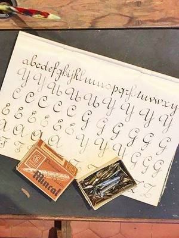
everysatPaper and writingOur best handwriting: a calligraphy lessonEvery Saturday, 16:30Quadrilatero (TO) · 5 €with MUSLI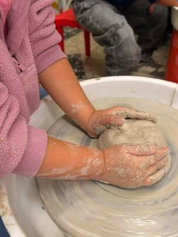
everymonFor familiesArt course for children: painting and ceramicsEvery Monday, 16:45–18:00Santa Rita (TO) · 50 € per monthwith Bunbury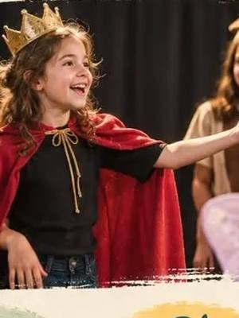
everytueFor familiesTheatre course for children: acting and inventingEvery Tuesday, 16:45–18:00Santa Rita (TO) · 50 € per monthwith Bunbury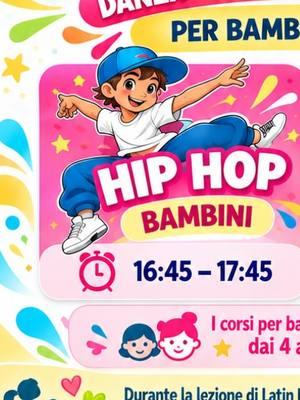
everywedFor familiesHip hop for kids: dance courseEvery Wednesday, 16:45–17:45Candiolo (TO)with I Gonfi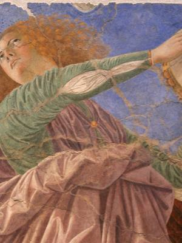
everytueFor familiesMusic course: babies from 9 to 36 monthsEvery Tuesday, 16:45Quadrilatero (TO)with Diletta Semboloni at Ninna Mamma Oh- everymonFor familiesBeginner guitar: a course for kidsEvery Monday, 17:00–19:00Mirafiori (TO)with Andrea Marzolla (Tilt Music) at Casa nel Parco
- everymonFor familiesEnglish through theatre: kids’ courseEvery Monday, 17:00–19:00Mirafiori (TO)with Alessandra Di Muro at Casa nel Parco
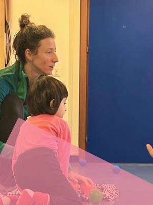
everywedFor familiesKids’ Wednesdays: music and movementEvery Wednesday, 17:00–18:00Mirafiori (TO) · Pay what you likewith Sara Formicola at Casa nel Parco everywedFor familiesReading Buddies: reading togetherEvery Wednesday, 17:00–18:00Aurora (TO)with Amici di lettura at Cecchi Point
everywedFor familiesReading Buddies: reading togetherEvery Wednesday, 17:00–18:00Aurora (TO)with Amici di lettura at Cecchi Point- everythuFor familiesGioco Teatro: drama for ages 3 to 6Every Thursday, 17:00Quadrilatero (TO)with Roberto Carena at Le Altalene
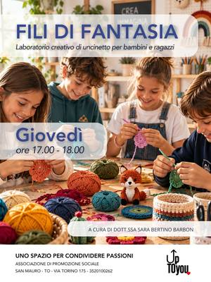
everythuFor familiesThreads of Imagination: crochet for kidsEvery Thursday, 17:00–18:00San Mauro Torinese (TO)with Sara Bertino Barbon at upTOyou everytuePaintingComics course: characters and storiesEvery Tuesday, 17:00–20:00San Mauro Torinese (TO)with Lorenzo Balocco at upTOyou
everytuePaintingComics course: characters and storiesEvery Tuesday, 17:00–20:00San Mauro Torinese (TO)with Lorenzo Balocco at upTOyou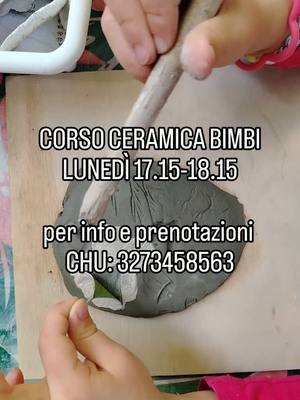
everymonFor familiesKids’ ceramics course: shaping clayEvery Monday, 17:15–18:15San Donato (TO)with Chu Lab